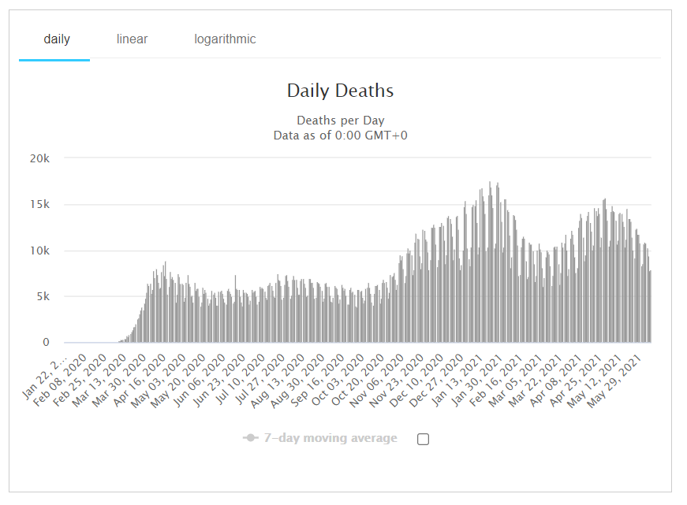
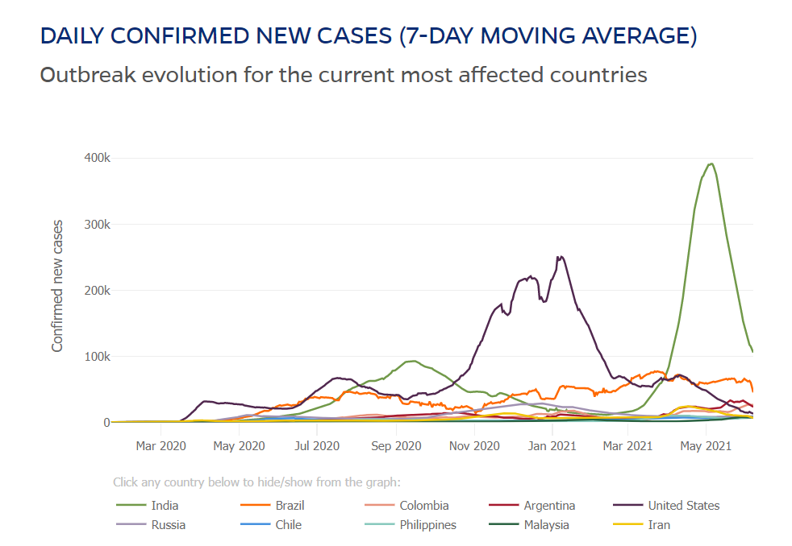
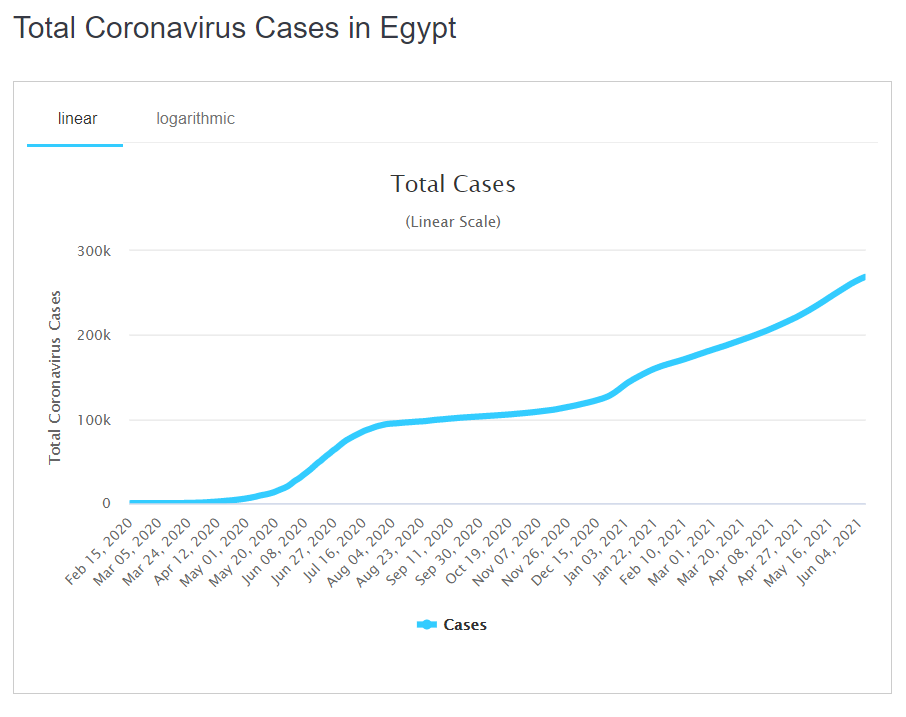
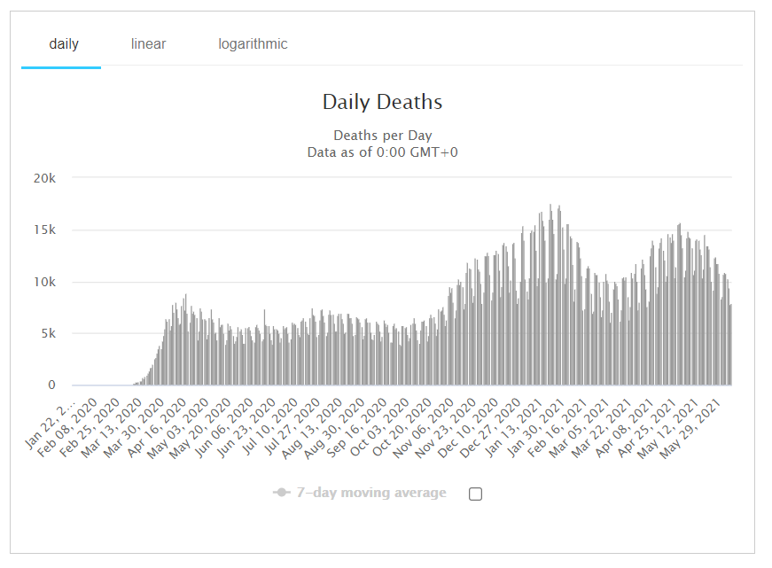
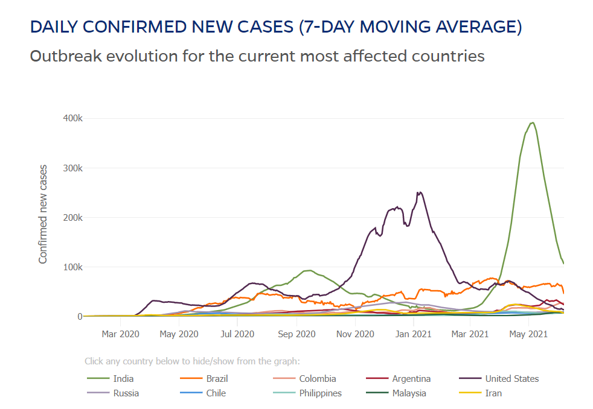
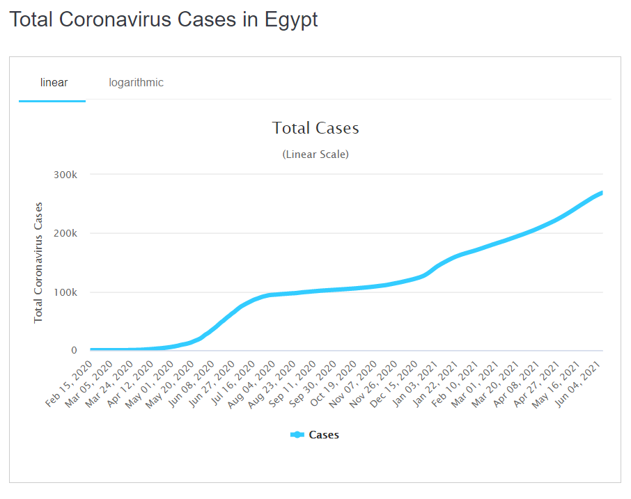
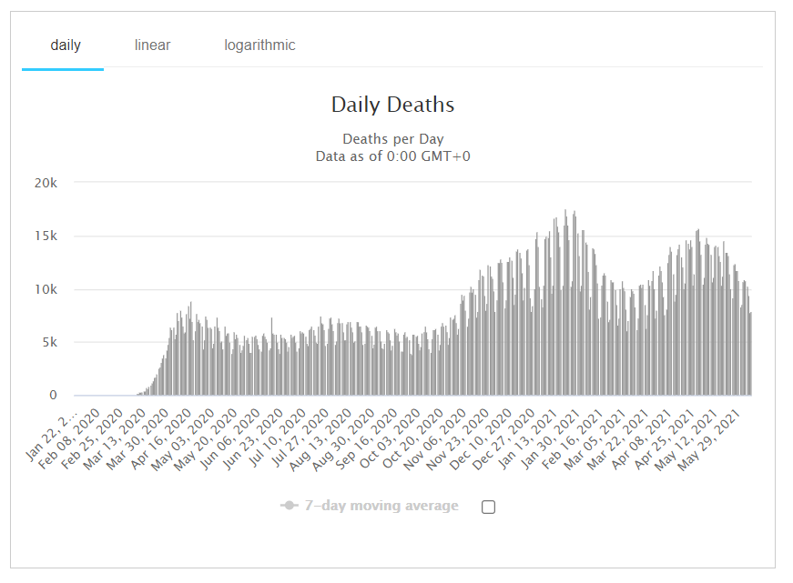
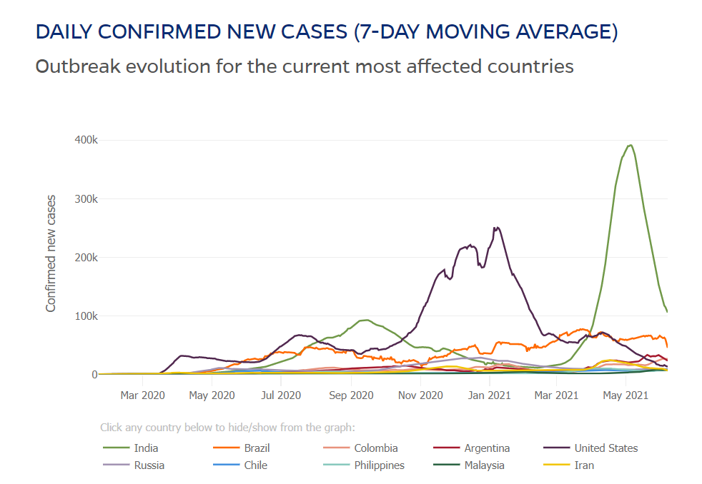
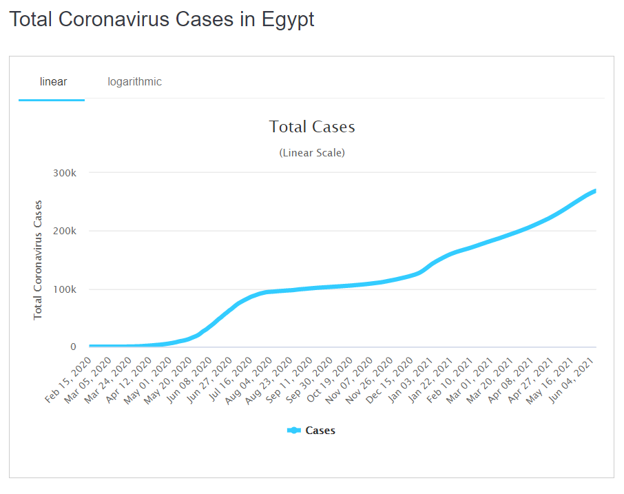

engineering corona curves Page
Links:
Computer Engineering Role in covid-19 pandemic Main Page
Computer in Corona cases
Computer Engineering Role in Corona Statistics
Engineering Corona Curves
Link Computer Engineering Role in covid-19 pandemic
Corona virus updater
It helps to know Corona indicators.
  
 




